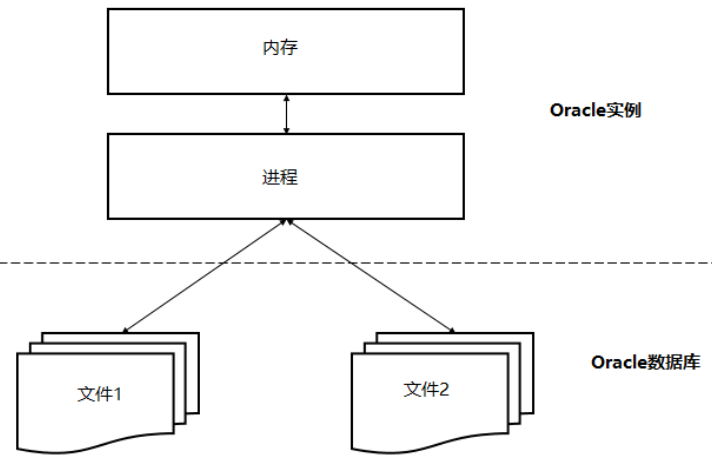
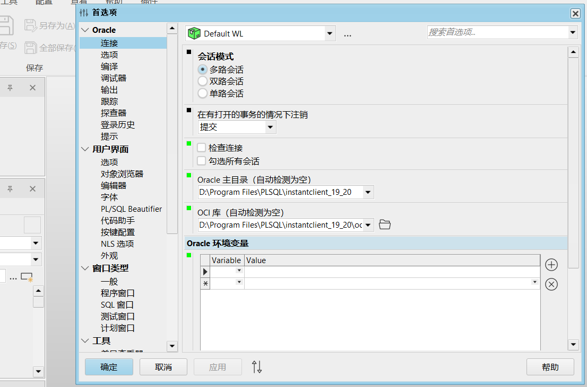
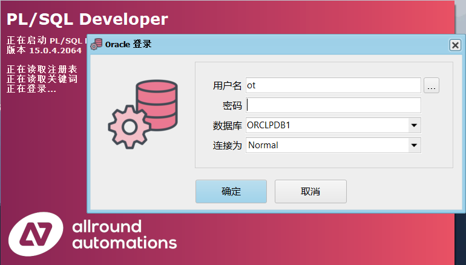

文章若有侵犯版权，请联系作者，我将迅速修改！
Oracle 简介
Oracle 数据库系统是美国 Oracle 公司提供的以分布式数据库为核心的一组软件产品，是目前世界上使用最为广泛的数据库管理系统；
- 作为一个通用的数据库系统，它具有完整的数据管理功能；
- 作为一个关系型数据库，它是一个完备关系的产品；
- 作为分布式数据库，它实现了分布式处理功能；
基本概念
数据文件
数据文件是数据库的物理存储单位，而表空间 TableSpace 则是数据库的逻辑组成部分；
数据库的数据是存储在表空间中的，而一个表空间可以有一个或多个数据文件组成，一个数据文件只能属于一个表空间；
表空间
表空间是 Oracle 对物理数据库上相关数据文件（ORA 或 DBF）的逻辑映射。
一个数据库在逻辑上被划分成一个到若干个表空间，每个表空间包含了在逻辑上相关联的一组结构。每个数据库至少有一个表空间，每个表空间由同一磁盘上的一个或多个文件组成，这些文件叫做数据库文件。
用户
用户是在实例下建立的，不同实例中可以建立相同名字的用户；
注意：表的数据，是由用户放入某一个表空间的，而这个表空间会随机把这些表数据放到一个或者多个数据文件中。
由于 Oracle 的数据库不是普通的概念，Oracle 是由用户和表空间对数据进行管理和存放的。但是表不是由表空间去查询的，而是由用户去查的。因为不同用户可以在同一个表空间建立同一个名字的表；
组成结构
Oracle 数据库服务器由一个数据库和至少一个数据库实例组成。数据库是一组存储数据的文件，而数据库实例则是管理数据库文件的内存结构；
Oracle 数据库
物理存储结构：
物理存储结构是存储数据的纯文件。当执行一个 CREATE DATABASE 语句来创建一个新的数据库时，将创建下列文件：
- 数据文件：包含真实数据，逻辑数据库结构的数据被物理存储在数据文件中；
- 控制文件：每个 Oracle 数据库都有一个包含元数据的控制文件。元数据是用来描述包括数据库名称和数据文件位置的数据库物理结构；
- 联机重做日志文件：每个 Oracle 数据库都有一个由重做条目组成的联机重做日志，里面包含两个或多个联机重做日志文件，能够记录下所有对数据进行的更改；
逻辑存储结构：
Oracle 数据库使用逻辑存储结构对磁盘空间使用情况进行精细控制。
- 数据块（Data blocks）：Oracle 将数据存储在数据块中，对应于磁盘上的字节数；
- 范围（Extents）：用于存储特定类型信息的逻辑连续数据块的具体数量；
- 段（Segments）：指分配用于存储用户对象的一组范围；
- 表空间（Tablespaces）：直接构成数据库的逻辑存储单元，是段的逻辑容器；
Oracle 实例
Oracle 实例是客户端应用程序（用户）与数据库之间的接口。Oracle 实例由三个主要部分组成：系统全局区（SGA）、程序全局区（PGA）和后台进程；
数据库实例名（INSTANCE_NAME）用于和操作系统关联，在操作系统中要取得与数据库之间的交互必须使用数据库实例名，每个数据库对应唯一的实例，默认情况下数据库名和数据库实例名是相同的。
以下是 Oracle 实例的主要后台进程：
- PMON：调节所有其他进程的进程监视器；
- SMON：执行系统级清理操作的系统监视进程；
- DBWn：数据库编写器，从内存读取数据并将其写回到磁盘；
- CKPT：检查点进程。在 Oracle 中，磁盘上的数据称为块，内存中的数据称为缓冲区；当该块写入缓冲区并更改时，缓冲区变脏，需要将其写入磁盘；
- LGWR：日志写入过程，是可恢复架构的关键；
Oracle 19c
Oracle 19c，或者说是 Oracle 12.2.0.3，是 12c 中稳定的版本；
Oracle 19c 将稳定性作为此版本的核心目标，开发人员专注于修复已知问题，而不是添加新功能；
安装（RPM）
使用手工方式，通过 RPM 安装 19c 数据库，只需要两步操作：
安装 oracle-database-preinstall-19c.x86_64；
oracle-database-preinstall-19c.x86_64 是一种预安装程序，它会在安装 Oracle 数据库之前进行一些必要的设置和配置，以确保系统能够顺利的安装与运行；
如果 OEL（Oracle 企业版 Linux）平台，只需要执行：
1
yum -y install oracle-database-preinstall-19c
如果不是 OEL 平台，可以在官网搜索下载：
https://yum.oracle.com/repo/OracleLinux/OL7/latest/x86_64/index.html
安装时，可能会出现依赖包（软件），使用 yum 在线下载即可；
安装 oracle-database-ee-19c-1.0.1.x86_64.rpm；
1
rpm -ivh oracle-database-ee-19c-1.0.1.x86_64.rpm
完成了软件安装，下一步就是创建数据库：
1
/etc/init.d/oracledb_ORCLCDB-19c configure
连接
登录并启动 Oracle 数据库
切换身份到 oracle；
1
su oracle
注意：在 Linux 中使用默认安装，会自动创建一个 oracle 用户，在这个用户下登录不需要正确的密码；同时，一些进程需要 oracle 用户启动，例如 lsnrctl start；
启动 Oracle 数据库（实例）：
1
2sqlplus / as sysdba
startup;在 Windows 上 Oracle 的登录：
使用在安装 Oracle 数据库服务器期间设置的密码以 sys 用户身份登录；
1
2请输入用户名：sys as sysdba
输入口令：直接修改 sys 用户密码：
1
alter user sys identified by sys1234;
接下来就可以使用账号密码像 Windows 一样直接调用 sqlplus 登录数据库了；
配置环境变量
1
2
3
4
5
6
7export ORACLE_BASE=/opt/oracle
# 正常使用 Oracle 的设置要求
export ORACLE_HOME=/opt/oracle/product/19c/dbhome_1
# 必须与数据库实例名称相同
export ORACLE_SID=ORCLCDB
# 可以直接执行 sqlplus 等命令
export PATH=${PATH}:${ORACLE_HOME}/bin注意：环境变量的配置是接下来登录和使用 oracle 数据库的基础；
查看 Oracle 数据库名称：
1
select name from v$database;
查看实例名称：
1
2
3
4# 方法一：sqlplus
select instance_name from v$instance
# 方法二：bash
ps -ef | grep ora_
创建 PDB 数据库
CDB 与 PDB 是 Oracle 引入的新特性，在 ORACLE 数据库引入的多租用户环境中，允许一个数据库容器（CDB）承载多个可插拔数据库（PDB）；
- CDB相当于操作系统，调用并管理各个PDB；
- PDB相当于真正提供业务需求的数据库实例；
CDB 数据库的组成，主要分为三个部分：
- ROOT 组件：又称 CDB$ROOT，存储着 ORACLE 提供的元数据和 Common User；Common User 是指在每个容器中都存在的用户；
- SEED 组件：又称 PDB$SEED，创建 PDBs 数据库的模板，用户不能在 seed 中添加或修改一个对象，一个 CDB 只能有一个 seed；
- PDBs：PDBs 向后兼容，可以进行大多数常规操作；
这些组件的每一个都可以被称为一个容器；每个容器在 CDB 中都有一个独一无二的 ID 和名称；
1
2
3SHOW con_name; # 显示当前容器名称 CDB$ROOT
SELECT con_id,dbid,guid,name,open_mode from v$pdbs; # 查看 CDB 中 PDBs
show pdbs;如果 CDB 中存在 PDB 数据库，状态为 MOUNTED，启动 PDB 数据库：
1
2
3
4
5# 方法一
ALTER PLUGGABLE DATABASE ORCLPDB1 OPEN;
# 方法二
ALTER SESSION SET CONTAINER = ORCLPDB1;
startup;在 PDB 中创建本地用户（common user）：
1
CREATE USER OT IDENTIFIED BY ot1234;
如果用户想在 PDBORCL 中创建用户，却未设置会话 container 到 PDB，会因为在 CDB 中创建公有用户而无法通过名称或角色验证出错（c##）；
如果 CDB 中不存在 PDB 数据库，则需要创建：
1
2
3
4create pluggable database pdborcl admin user ot identified by ot1234 roles=(connect) file_name_convert=('/opt/oracle/oradata/ORCLCDB/pdbseed','/opt/oracle/oradata/ORCLCDB/pdborcl');
# pdborcl : 创建的可插接式数据库
# ot : 创建的用户
# ot1234 : 密码
授权
使用以下 GRANT 语句授予 OT 用户权限：
1
GRANT CONNECT, RESOURCE, DBA TO OT;
切换到新账号
语法：
sqlplus username/password@IP:port/pdb_name；语法：
connect username/password@pdb_name；
使用新账号进行登录：
1
2
3
4# 方法一
sqlplus ot@ORCLPDB1
# 方法二
CONNECT ot@ORCLPDB1错误一：ORA-01017: invalid user/password; logon denied；
不能使用 connect 直接登录在 pdb 中创建的普通用户，普通用户登录需指定 pdb；
1
sqlplus ot/ot1234@ORCLPDB1
错误二：ORA-12154: TNS: 无法解析指定的连接标识符；
配置 $ORACLE_HOME/network/admin/tnsnames.ora 文件；
1
2
3
4
5
6
7
8
9
10
11# text 为将会先实现pl/sql登录界面数据库选项
text=
(DESCRIPTION =
(ADDRESS_LIST =
(ADDRESS = (PROTOCOL = TCP)(HOST =127.0.0.1)(PORT = 1521))
)
(CONNECT_DATA =
# 这个 text 是数据库实例名，大小写敏感
(SERVICE_NAME = text)
)
)错误三：ORA-12541: TNS: no listener；
1
2# 在 oracle 用户下
lsnrctl start
通过 .sql 文件建表
1
@".sql文件路径"
服务自启动
配置 dbstart 和 dbshut 文件
确认 $ORACLE_HOME 环境变量是否设置正确；
修改 $ORACLE_HOME/bin/dbstart 文件；
- 将
ORACLE_HOME_LISTNER=$1修改为ORACLE_HOME_LISTNER=$ORACLE_HOME； - 将
ORACLE_HOME=$1; export ORACLE_HOME注释；
同理，可以修改 dbshut 文件；
- 将
编辑 /etc/oratab 文件，dbca 建库时会自动创建该文件；
每一行都代表一个数据库实例，后面的 Y|N 选项代表开机是否自启动；
1
ORCLCDB:/opt/oracle/product/19c/dbhome_1:Y
最后，可以使用 dbstart 启动 Oracle 服务；
可以查看启动日志，$ORACLE_HOME/rdbms/log/startup.log；
将程序设置成系统服务
编辑系统服务软件，vim /etc/systemd/system/oracle.service；
1
2
3
4
5
6
7
8
9
10
11
12
13
14
15
16
17[Unit]
Description=initiate oracle
After=syslog.target network.target
[Service]
LimitMEMLOCK=infinity
LimitNOFILE=65535
Type=oneshot
RemainAfterExit=yes
User=oracle
Environment="ORACLE_HOME=/opt/oracle/product/19c/dbhome_1"
Environment="ORACLE_SID=ORCLCDB"
ExecStart=/opt/oracle/product/19c/dbhome_1/bin/dbstart
ExecStop=/opt/oracle/product/19c/dbhome_1/bin/dbshut
[Install]
WantedBy=multi-user.target重新加载 service，
systemctl daemon-reload；查询 service 状态，
systemctl list-unit-files|grep oracle；进行 start、stop、enable 和 disable；
PL/SQL（Windows）
PLSQL 指的是 PLSQL developer 这个 Oracle 数据库客户端连接工具，这个工具以其方便和强大被广大开发者喜爱；
远程连接数据库
关系型数据库：MySQL、PostgreSQL、Oracle、Microsoft SQL Server；
非关系型数据库：MongoDB、Sybase；
连接数据库时，通常可以使用两种不同的网络协议，即 SSH（Secure Shell）和 TCP。它们各自具有一些优点和缺点，选择哪种协议取决于你的具体需求和安全要求。
SSH 连接数据库：
优点：
- 安全性高：SSH 提供了加密通信，可以保护数据在传输过程中的安全性；
- 认证机制：SSH 提供了强大的身份验证和授权机制，可以确保只有授权用户可以连接到数据库服务器；
- 通用性：SSH 不仅可以用于连接数据库，还可以用于其他网络管理任务；
缺点：
- 复杂性：SSH 连接通常需要额外的设置和配置，包括生成和管理 SSH 密钥对；
- 性能开销：SSH 加密和解密数据可能会引入一定的性能开销，特别是在处理大量数据时；
TCP 连接数据库：
优点：
- 简单性：TCP 连接通常比 SSH 连接更简单直接，不需要额外的加密和身份验证配置；
- 性能：由于没有 SSH 加密解密的开销，TCP 连接可能更快；
- 适用性：TCP 连接适用于那些不需要额外安全层的场景，例如，如果数据库服务器位于受物理安全保护的内部网络中，或者通过其他手段已经得到了足够的安全保护；
缺点：
- 安全性较低：相对于 SSH，TCP 连接不提供数据的加密和身份验证；
- 数据保护：TCP 连接不提供数据的隐私保护，因此数据在传输过程中可能容易被窃听或篡改；
综合考虑，选择SSH还是TCP连接数据库取决于你的具体情况。如果安全性是首要考虑因素，或者你需要在不受信任的网络中传输敏感数据，那么SSH可能是更好的选择。但如果性能和简单性对你来说更为重要，并且你已经通过其他手段确保了网络的安全性，那么TCP连接可能是更合适的选项。最佳选择通常需要综合考虑安全、性能和操作复杂性等因素。
安装与配置
下载 PLSQL 和 Oracle Instant Client，解压 Oracle Instant Client（instantclient-basic-windows.x64-19.20.0.0.0dbru）到 PLSQL 工作目录；
配置环境变量 ORACLE_HOME 和 TNS_ADMIN；
- ORACLE_HOME：
D:\Program Files\PLSQL\instantclient_19_20； - TNS_ADMIN：
%ORACLE_HOME%\network\admin；
- ORACLE_HOME：
选择 OCI 库，这个文件会通过环境变量自动配置；
其中，OCI 库（oci.dll）位于 %ORACLE_HOME% 目录下；
在 %ORACLE_HOME%\network\admin 下，创建 tnsnames.ora 文件；
tnsnames.ora 用在 oracle client 端，用户配置连接数据库的别名参数的网络服务配置文件。
1
2
3
4
5
6
7
8
9ORCLPDB1 =
(DESCRIPTION =
(ADDRESS_LIST =
(ADDRESS = (PROTOCOL = TCP)(HOST = 192.168.40.40)(PORT = 1521))
)
(CONNECT_DATA =
(SERVICE_NAME = ORCLPDB1)
)
)其中，Oracle 监听器（listener.ora）正在运行保持本机 1521 端口的监听；
1
(ADDRESS = (PROTOCOL = TCP)(HOST = localhost)(PORT = 1521))
连接数据库；
进行登录时，实际上就是
sqlplus ot/ot1234@ORCLPDB1；
如果出现 ORA-12170: TNS:Connect timeout occurred 错误，需要考虑服务器防火墙的配置；开放端口，开放协议；
1 | firewall-cmd --permanent --add-port=1521/tcp |
防火墙相关
防火墙（Firewall）技术是通过有机结合各类用于安全管理与筛选的软件和硬件设备，帮助计算机网络于其内、外网之间构建一道相对隔绝的保护屏障，以保护用户资料与信息安全性的一种技术。
firewalld 是 CentOS 7 的一大特性，最大的好处有两个：
- 支持动态更新，不用重启服务；
- 加入了防火墙的 “zone” 概念；
systemctl
启动防火墙：
1
systemctl start firewalld.service
关闭防火墙：
1
systemctl stop firewalld.service
禁用防火墙：
1
systemctl disable firewalld.service
查看防火墙状态：
1
systemctl status firewalld.service
firewall-cmd
firewall-cmd 是 firewalld 的字符界面管理工具；
重启防火墙：
1
firewall-cmd --reload
查看防火墙：
1
2firewall-cmd --version # 版本
firewall-cmd --state # 状态查看端口开放情况：
1
firewall-cmd --query-port=80/tcp
查看开放的端口：
1
firewall-cmd --permanent --list-ports # permanent 表示持久
开放端口：
1
2firewall-cmd --permanent --add-port=8080/tcp
firewall-cmd --permanent --add-port=8083-8085/tcp关闭端口：
1
firewall-cmd --permanent --remove-port=8083-8085/tcp
Oracle 基础知识
关于数据库语言的分类：
DDL：数据库定义语言：create、drop；
DML：数据库操作语言：insert、update、delete；
DQL：数据库查询语言：select；
DCL：数据库控制语言：grant、revoke；
Select 语句
在表格中查询数据；
1 | SELECT [DISTINCT] |
- DISTINCT：过滤结果集中的重复行；
Oracle By 语句
用来对一列或多列的结果集按升序或降序进行排序：
1 | SELECT |
请注意，ORDER BY 子句总是 SELECT 语句中的最后一个子句；
在 ORDER BY 子句中使用函数或表达式排序数据：
1 | SELECT customer_id, name |
Where 子句
指定过滤的条件返回符合查询条件的行记录：
1 | SELECT |
WHERE 子句出现在 FROM 字句之后，ORDER BY 子句之前；
除了 SELECT 子句之外，还可以使用 DELETE 或 UPDATE 语句中的 WHERE 子句来指定要删除或更新的行记录；
Oracle 中提供的比较运算符：
| 编号 | 运算符 | 描述 |
|---|---|---|
| 1 | = |
等于 |
| 2 | !=, <> |
不等于 |
| 3 | > |
大于 |
| 4 | < |
小于 |
| 5 | >= |
大于等于 |
| 6 | <= |
小于等于 |
| 7 | IN |
等于值列表中的任何值 |
| 8 | ANY/SOME/ALL |
将值与列表或子查询进行比较 必须以另一种运算符（=, >, <）作为前缀 |
| 9 | NOT IN |
不等于值列表中的任何值 |
| 10 | [NOT] BETWEEN n AND m |
相当于 [NOT] >=n 且 <=m |
| 11 | [NOT] EXISTS |
如果子查询返回至少一行，则返回 true |
| 12 | IS [NOT] NULL |
测试 NULL 的值 |
1 | SELECT |
Fetch 子句
可以用来限制查询返回的行数：
1 | [ OFFSET offset ROWS] |
OFFSET 子句指定在行限制开始之前要跳过行数；如果跳过它，则偏移量为 0；
偏移量必须是一个数字或一个表达式，其值为一个数字：
- 如果偏移量是负值，则将其视为 0；
- 如果偏移量为 NULL 或大于查询返回的行数，则不返回任何行；
- 如果偏移量包含一个分数，则分数部分被截断；
WITH TIES 返回与最后一行相同的排序键，也就是，只有存在 ORDER BY 子句，才会返回额外的行；
以下查询将跳过库存量最高的前 10 个产品，并返回接下来的 10 个产品：
1 | SELECT |
Oracle 事务
事务在数据库中是工作的逻辑单元，单个事务是由一个或多个完成一组的相关行为的 SQL 语句组成；
通过事务机制，可以确保这一组 SQL 语句所作的操作要么都成功执行，完成整个工作单元操作，要么一个也不执行；
即，数据库中事务的基本特性（ACID）：
- 原子性（Atomicity）：一个事务里所有包含的 SQL 语句都是一个整体，不可分割；
- 一致性（Consistency）：事务开始时，数据库中的数据是一致的，事务结束时，数据库的数据也应该是一致的；
- 隔离性（Isolation）：数据库允许多个并发事务同时对其中的数据进行读写和修改的能力，隔离性可以防止事务在并发执行时，由于他们的操作命令交叉执行而导致的数据不一致状态；
- 持久性（Durability）：当事务结束后，它对数据库中的影响是永久的，即使系统遇到故障的情况下，数据也不会丢失；
COMMIT 语句
在 Oracle 中，COMMIT 语句可以用来提交当前事务的所有更改：
1 | COMMIT [ WORK ] [ COMMENT clause ] [ WRITE clause ] [ FORCE clause ]; |
参数：
WORK：被 Oracle 添加为符合 SQL 标准。使用或不使用没有影响；COMMENT clause：用于指定与当前事务关联的注释，最多 255 字节；WRITE clause：用于指定将已提交事务的重做信息写入重做日志的优先级。用这个子句，有两个参数可以指定：- WAIT（默认）或 NOWAIT；
- IMMEDIATE（默认）或 BATCH；
FORCE clause：用于强制提交可能已损坏或有疑问的事务，可以用 3 种方式指定：FORCE'string', [integer]，FORCE CORRUPT_XID'string'或FORCE CORRUPT_XID_ALL；
注意：
- 必须拥有 DBA 权限才能访问系统视图，DBA_2PC_PENDING 和 V$CORRUPT_XID_LIST；
- 必须拥有 DBA 权限才能指定 COMMIT 语句的某些功能；
ROLLBACK 语句
用来撤销当前事务或有问题的事务：
1 | ROLLBACK [ WORK ] [ TO [SAVEPOINT] savepoint_name | FORCE 'string' ]; |
参数：
WORK：被 Oracle 添加以符合 SQL 标准；TO SAVEPOINT savepoint_name：撤销当前会话的所有更改，直到保存点；如果省略该子句，则所有更改都将被撤销；FORCE 'string'：用于强制回滚可能已损坏或有问题的事务，单引号内为事务 ID；
使用保存点（savepoint）来标记事务中的一个特定点，部分撤消已经完成的操作，而无需回滚整个事务；
SET TRANSACTION 语句
用来设置事务的各种状态，比如只读、读/写、隔离级别，为事务分配名称或将事务分配回滚段等等：
1 | SET TRANSACTION [ READ ONLY | READ WRITE ] |
参数：
ISOLATION LEVEL：有两个选项：ISOLATION LEVEL SERIALIZE：如果事务尝试更新由另一个事务更新并未提交的资源，则事务将失败；ISOLATION LEVEL READ COMMITTED：如果事务需要另一个事务持有的行锁，则事务将等待，直到行锁被释放；
USE ROLLBACK SEGMENT：将事务分配给由 segment_name 标识的回退段；
LOCK TABLE 语句
用来锁定表、表分区或表子分区：
1 | LOCK TABLE tables IN lock_mode MODE [ WAIT [, integer] | NOWAIT]; |
参数：
tables：用逗号分隔的表列表；
lock_mode：
lock_mode 描述 ROW SHARE 允许同时访问表，但阻止用户锁定整个表以进行独占访问。 ROW EXCLUSIVE 允许对表进行并发访问，但阻止用户以独占访问方式锁定整个表并以共享方式锁定表。 SHARE UPDATE 允许同时访问表，但阻止用户锁定整个表以进行独占访问。 SHARE 允许并发查询，但用户无法更新锁定的表。 SHARE ROW EXCLUSIVE 用户可以查看表中的记录，但无法更新表或锁定 SHARE 表中的表。 EXCLUSIVE 允许查询锁定的表格，但不能进行其他活动。 WAIT：指定数据库将等待以获取 DML 锁定；
NOWAIT：指定数据库不应该等待释放锁；
Oracle 外键
外键用于与另一张表的关联，用于保持数据的一致性；
Oracle 外键创建
在 Oracle 数据库中，外键是强制实施参照完整性的一种方式，被引用的表称为父表，而带有外键的表称为子表；
使用 CREATE TABLE 语句创建外键：
1
2
3
4
5
6
7
8
9
10
11CREATE TABLE table_name
(
column1 datatype null/not null,
column2 datatype null/not null,
...
CONSTRAINT fk_column
FOREIGN KEY (column1, column2, ... column_n)
REFERENCES parent_table (column1, column2, ... column_n)
[ON DELETE CASCADE]
);例如，在 supplier 表上创建 supplier_pk 主键，只包含一个 supplier_id 字段；然后，在 products 表上创建 fk_supplier 外键，根据 supplier_id 字段引用 supplier 表；
1
2
3
4
5
6
7
8
9
10
11
12
13
14
15
16CREATE TABLE supplier
(
supplier_id numeric(10) not null,
supplier_name varchar2(50) not null,
contact_name varchar2(50),
CONSTRAINT supplier_pk PRIMARY KEY (supplier_id)
);
CREATE TABLE products
(
product_id numeric(10) not null,
supplier_id numeric(10) not null,
CONSTRAINT fk_supplier
FOREIGN KEY (supplier_id)
REFERENCES supplier(supplier_id)
);使用 ALTER TABLE 语句创建外键：
1
2
3
4
5ALTER TABLE table_name
ADD CONSTRAINT constraint_name
FOREIGN KEY (column1, column2, ... column_n)
REFERENCES parent_table (column1, column2, ... column_n)
[ON DELETE CASCADE];例如：
1
2
3
4ALTER TABLE products
ADD CONSTRAINT fk_supplier
FOREIGN KEY (supplier_id, supplier_name)
REFERENCES supplier(supplier_id, supplier_name);
注意：通过 ON DELETE CASCADE 定义级联删除，当主表中的一条记录被删除，那么子表中所关联的记录也相应的自动删除。
Oracle 删除外键
1 | alter table "表名" drop constraint "外键名" |
Oracle 禁用/启用外键
禁用：
1
2ALTER TABLE table_name
DISABLE CONSTRAINT constraint_name;启用：
1
2ALTER TABLE table_name
ENABLE CONSTRAINT constraint_name;
Oracle 字符串函数
ASCII 函数
返回代表指定字符的数字值代码；
语法：
1 | ASCII( single_character ) |
参数：
- single_character：如果输入多个字符，只返回第一个字符的值；
ASCIISTR 函数
将任何字符集中的字符串转换为 ASCII 字符串；
语法：
1 | ASCIISTR( string ) |
示例：
1 | ASCIISTR('A B C Õ Ø') |
CHR 函数
根据数字代码返回字符，其功能与 ASCII 函数相反；
语法：
1 | CHR( number_code ) |
COMPOSE 函数
返回一个 Unicode 字符串；
语法：
1 | COMPOSE( string ) |
参数：
- string：用于创建 Unicode 字符串的输入值，可以是 char、varchar2、nchar、nvarchar2、clob 或 nclob；
示例：
1 | COMPOSE('o' || unistr('\0308') ) |
CONCAT 函数
将两个字符串连接在一起；如果需要连接多个值，那么我们可以嵌套多个 CONCAT 函数调用；
语法：
1 | CONCAT( string1, string2 ) |
示例：
1 | CONCAT('Let''s', ' learn Oracle') |
注意：两个 '' 表示一个 '（单引号）；
|| 连接运算符
将两个或两个以上的字符串连接在一起；
语法：
1 | string1 || string2 [ || string_n ] |
示例：
1 | 'Dave' || ' ' || 'Anderson' |
CONVERT 函数
将字符串从一个字符集转换为另一个字符集；
语法：
1 | CONVERT( string1, char_set_to [, char_set_from] ) |
参数：
- string1：要转换的字符串；
- char_set_to：要转换为的字符集；
- char_set_from：可选，要从中转换的字符集；
| 字符集 | 描述 |
|---|---|
| US7ASCII | 美国 7 位 ASCII 字符集 |
| WE8DEC | 西欧 8 位字符集 |
| WE8HP | 惠普西欧 Laserjet8 位字符集 |
| F7DEC | DEC 法语 7 位字符集 |
| WE8EBCDIC500 | IBM 西欧 EBCDIC 代码第 500 页 |
| WE8PC850 | IBM PC 代码第 850 页 |
| WE8ISO8859P1 | ISO 8859-1 西欧 8 位字符集 |
DUMP 函数
可以返回一个 varchar2 值，包含数据类型代码、字节长度和表达式的内部表示形式；
语法：
1 | DUMP( expression [, return_format] [, start_position] [, length] ) |
参数：
expression：要分析的表达式；
return_format：决定了返回值的格式，该参数可以是一下任何值：
值 意义 8 八进制符号 10 十进制符号 16 十六进制符号 17 单个字符 1008 带字符集名称的八进制符号 1010 带字符集名称的十进制符号 1016 带字符集名称的十六进制符号 1017 带字符集名称的单个字符 start_position：可选，要返回的内部表示的起始位置；
length：可选，要返回的内部表示的长度；
如果省略了 return_format、start_position 和 length 参数，则 DUMP 函数将以十进制表示形式返回整个内部表示形式；
示例：
1 | DUMP('Tech') |
INITCAP 函数
将每个单词中的第一个字符设置为大写，其余设置为小写；
语法：
1 | INITCAP( string1 ) |
示例：
1 | INITCAP('tech on the oraok'); |